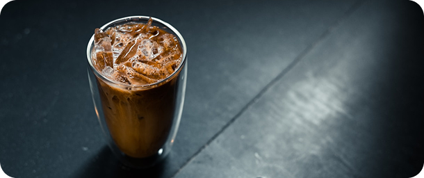
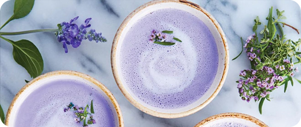

REPUTATION ESPRESSO
Oscuro, intenso, y no necesita explicaciones. Perfecto para un boost de energía en cualquier momento del día


Oscuro, intenso, y no necesita explicaciones. Perfecto para un boost de energía en cualquier momento del día
Café americano con un toque de vainilla y canela. Clásico, suave y con personalidad.

Cappuccino suave con espuma de leche sedosa. Para cuando necesitas magia en lo cotidiano.

Latte clásico con leche entera o vegetal. Sutil, suave y siempre presente en tu orden.

Café cold brew servido con hielo. Tan frío como su despedida, pero irresistible hasta el último sorbo.

Iced macchiato con caramelo y shot extra de espresso. Porque todo vuelve... y lo saboreas.

Mocha helado con chocolate amargo y crema batida. El equilibrio perfecto entre fuerza y pop.

Frappé de almendra tostada con leche de avena y un shot de espresso. Se va, pero te deja el corazón lleno.
Latte de lavanda con leche de almendra y un toque de vainilla. Todo lo que sueñas después de medianoche.
Cheesecake de vainilla con base crocante de galleta y topping de frutos rojos frescos: frambuesas, arándanos y moras.